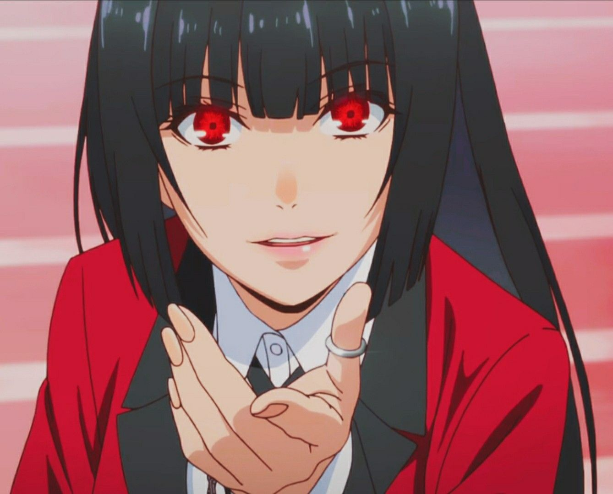
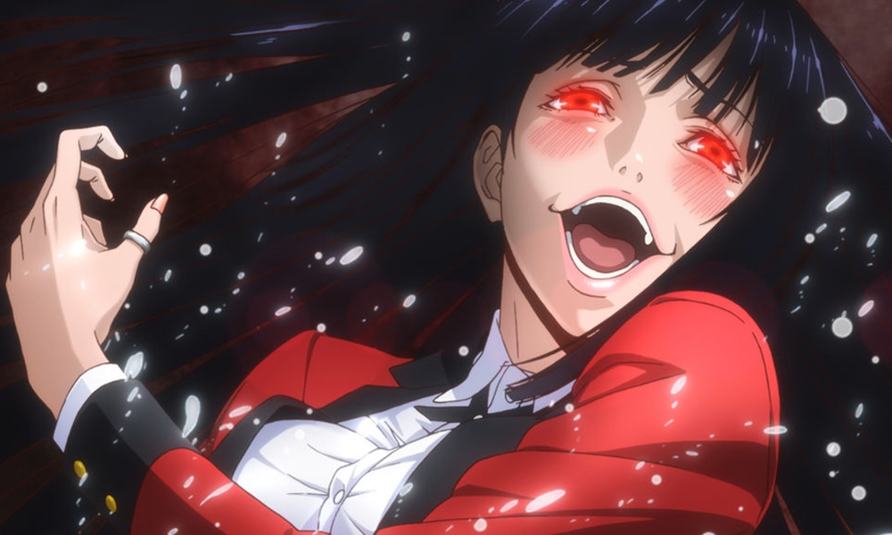

Yumeko Jabami (蛇じゃ喰ばみ夢ゆめ子こ Jabami Yumeko) é a principal protagonista de Kakegurui. Ela é uma estudante transferida para a Escola Particular Hyakkao e colega de classe de Mary Saotome e Ryota Suzui.
Yumeko é uma garota muito bonita de pele clara de cabelos pretos longos estilizados num corte hime e olhos avermelhados. Possui estatura razoavelmente alta e corpo curvilíneo bem marcado em seu uniforme de Hyakkao que consiste-se em uma camisa abotoada de manga longa branca junto de uma gravata cruzada preta, blazer vermelho com botões dourados, saia cinza, meia-calça preta e sapatos marrons. Yumeko pinta as unhas de vermelho, usa batom rosa pálido nos lábios e um anel de prata em seu polegar esquerdo.
A princípio, Yumeko parece ser apenas uma jovem garota amigável. Ela possui um comportamento bastante carismático e otimista, além de aparentar ser um tanto ingênua, até mesmo sendo capaz de fazer amizade com aqueles que jogou anteriormente, um exemplo bem claro sendo a própria Mary. Seu charme é estranhamente atrativo e ela foi capaz de chamar a atenção do Grêmio Estudantil em seu primeiro dia em Hyakkao. Apesar de geralmente ser amigável, Yumeko não age dessa forma quando é para expor a trapaça de seus oponentes, demonstrando uma capacidade perceptiva admirável ao notar em apenas algumas poucas rodadas de jogo, utilizando o próprio truque deles contra eles. Ela condena o uso de trapaças e truques, valorizando honestidade acima de educação nesses casos. Yumeko não sente medo ou ansiedade quando enfrenta desvantagem numa aposta; na verdade, ela sente excitação. Por causa disso que ela não hesita ao aumentar suas apostas em grandes números, mesmo que não possa confiar em nada além de sorte. Apesar de essa confiança acabar em sua derrota algumas vezes, Yumeko não é emocionalmente afetada por isso; ela simplesmente implementa seus ganhos e/ou perdas em seu hábito de apostar. Inclusive, frequentemente incentiva seus amigos a sentirem o mesmo que ela. Yumeko está ciente que seu comportamento é excêntrico e não segue as normais condutas de apostas. Ela fica verdadeiramente feliz quando seus amigos, principalmente os mais próximos, a apoiam e a encorajam, não importando o tipo de coisa que ela talvez faça, fazendo-a valorizar bastante sua amizade, embora de sua própria maneira. Apesar da alegria e prazer que apostas lhe dão, Yumeko racionalmente entende que suas atitudes vão além de imorais e depravadas; ela admitiu que não sente remorso algum ao derrotar e arruinar seus oponentes numa aposta, na verdade, se sente culpada por não ser capaz de simpatizar com suas vítimas.
VOLTAR